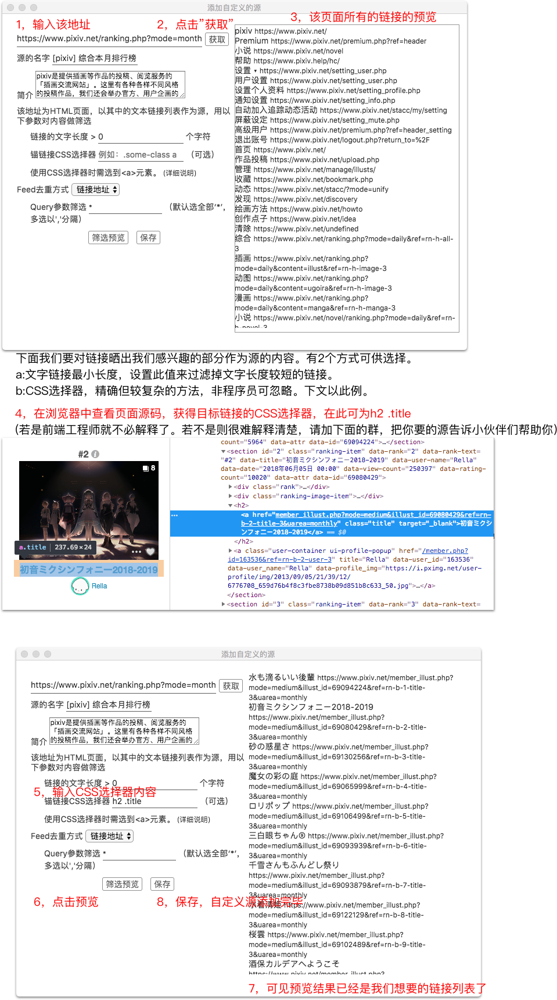

立刻阅读器，订阅RSS，也能订阅网页，更能收听播客节目！
打开源市场 添加自定义源
上一篇 CMD或Ctrl + 左箭头
下一篇 CMD或Ctrl + 右箭头
向下滚动 下箭头
向上滚动 上箭头
*更多功能在鼠标右键菜单中
telegram: （待）
QQ群:568968683
微信号:fateleak
欢迎大家分享源、播客、文章见解，软件使用及Bug反馈，谈天说地。
若为普通的RSS/ATOM源，直接提供地址即可。以下介绍对普通网页的订阅方法： (局限性告知：不支持动态加载的内容，但一般能找到方法绕过) 以下以Pixiv.net的月度排行榜为例，其网页地址为https://www.pixiv.net/ranking.php?mode=monthly  备注： 1，若您是前端工程师，就不解释了。 2，若您是程序员，但不了解CSS选择器，请参考该手册。 3，非技术人员，请加我们的基友群，管理员会帮你搞定一切。 更详细的教程Wiki
1, 当使用代理（例：SS)时，若网络状态变化，则软件会退出。 （由上游chromium产生的bug，应该很快会修复）